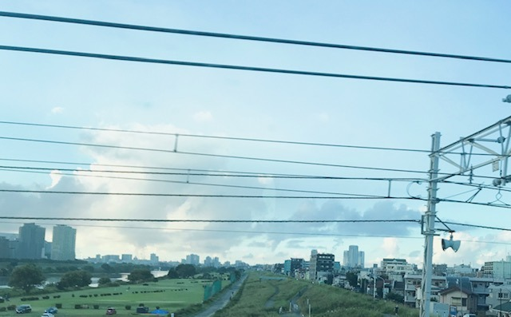
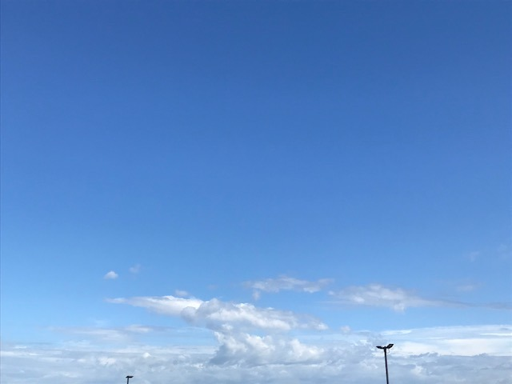
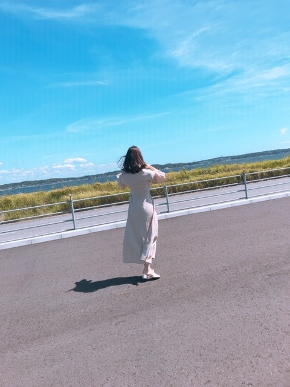
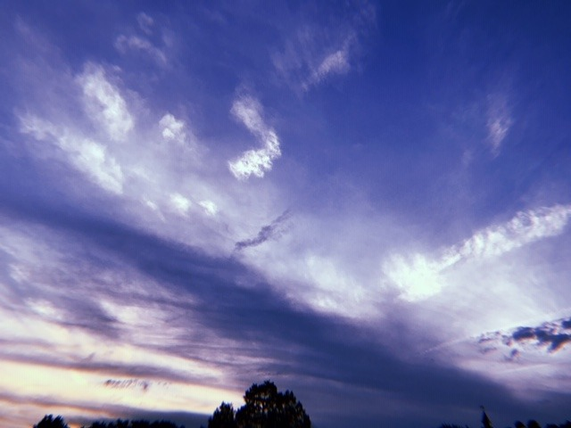

2019/0908Sun空
わたしの好きなものの話をしたいと思います。
1つめは、空です☺︎
空って 見る場所、時間、人、天気で
全然違う空の顔をしていて、
それが凄く興味深くて頻繁に空を見ている気がします。
空を見上げる癖は、昔から。
泣きたい時、嬉しい時、変わりたい時、深呼吸とともに空の様子を伺います。
空はどんな顔をしてるかなーって

秋の空だなぁとか雲ひとつない綺麗な青だなぁとか、
穏やかで優しい空かと思えば雲がたくさんの時もあるし同じ時がないのも空の良さでもありますよね
自分が今見ている空は、自分しか見れないっていう特別感もあるけど広すぎてなにかを遠くに感じて、時々冷たく感じるときもあります。
私なんかちっぽけだ って。
でも空ってずっとずっとどこまでも繋がっていて
今、自分が1人な気がしていても絶対に1人じゃないよって
定期的に空を見上げる心配性のわたしを安心させてくれるあったかい存在でもあるんです。
例えば私が名古屋で見た空と
どこかの誰かが東京で見た空の形は違うけど
必ず繋がっていて、1人で見た空が誰かと見た空になっているのって凄く心強いし嬉しいことだなって。支え合って、思い合って生きてるんだって。
見るたび、見たことのない空の景色が広がっていて、何で"一緒"が無いんだろうって不思議にも思うけど
空の場所は自分が顔を上げた目線の先にいつも変わらずあって、居る場所は変わらないのに表情が違うって、
私自身もそうなのかなと。
自分は変わらず存在してるけど、毎日違う感情や環境に包まれて変わっていってるから
きっと、空も私も似たもの同士

青の色も雲の高さも全部違うし
だからこそ毎日見たいし
私もそんな安定感と新鮮さのバランスか取れた人になりたいなぁって思います☺︎


明日はどんな空か、楽しみです。
2019/09/08 20:12


コメント(404)
毎日未央奈さんのブログ楽しみにしてます！
未央奈さんのブログを読んで寝るのが毎日の日課です、ぼくにとって大切な未央奈さんのブログ！
これからも楽しみにしてます
楽しかった？
関東に台風がきてるから気をつけてね
僕もお空見るの大好き(^^)
斉藤貴巳
すき！！
応援し続けます
昨日の個握と今日のミニライブありがとうございました。
自分は口ベタだし面白い話をするのも苦手です。が、未央奈ちゃんのおかげです凄い楽しかったです(о´∀`о)未央奈ちゃんの笑顔にはそれだけの力があります、これからも応援しています。
無事に東京に帰れましたかね？？早めに握手会が終わったとはいえやはり心配です。明日も被害がでるかも知れませんので気をつけてください。未央奈ちゃんの安全を願っていますm(_ _)m
では！！
空っていいですね！
次の全握行こうと思ってるから、待っててね！！！
すき！
初めて未央奈を目の前で見たけど凄い可愛かった！
また機会があれば握手会行くね！
今日はお疲れさま！ゆっくり休んでね！
東京に出てきてから、なかなか空を見ることがなくなってしまったなと思いました。目まぐるしく変わる自分の周りの環境についていくのが精一杯で、空をみる余裕すらもなかったのかもしれません。
私も、何かに行き詰まったりした時に空を見てみようと思います！
神宮ライブお疲れ様
まだ暑い日続くけど頑張って
空未央奈ちゃんブログ更新ありがとう
空は色んな風景を作ってくれるよね
燃える様な赤や
こい青、薄い青
雲が多い日少ない日色んな風景が
あるよね〜〜⁉︎
だけどその空も１つだよね〜
未央奈ちゃんがよく見る東京の空
こちらの愛知の空も１つだね〜⁉︎
明日はどんな空になるかな⁇(^ ^)
うちの堀は最高かよ！
未央奈らしさが1番好きです
今日は握手してもらってありがとうございました！超短かったけど未央奈さんに合えただけで満足です！！
あとAm I Loving?近くで見れて最高でした！ダンスかわいいしライブでもみたいなぁ……
お体に気をつけて頑張ってください！
ずっと応援してます！！！
自分も昨日空を見てきれいだな～と思っていました！
地元の町と山と青空の組み合わせが最高で
涙が出そうになります…
健康に安全にお過ごしください
応援してます！
わっさー！
空っていいよね！僕は今週沖縄に行きます！地元の空と何が違うか見て来ます！
さて秋めいて来ましたが花粉の時期がやってきますね
堀ちゃんも
花粉症だよねぇーお互い辛くなるますが頑張って乗り越えていこー！
私も空すき~♡♡
でも未央奈の方がすき~♡♡
握手2日間お疲れ様！！
ほんとーにかわいいよ！！！みおちゃーん
名古屋個握初めて1部から5部まで行かせてもらったけど楽しかったよ〜
空を見てると不思議と気持ちが晴れてきます。
空ありがとうそして未央奈可愛すぎるありがとう。
未央奈ちゃんも空好きなんだね(＞∀＜)
自分もよく見てて、空模様によってその日の気分が結構変わっちゃうんだよね笑(´∀`)
たしか、４期生の悠理ちゃんも空が好きって言ってたから空の写真を見せあっても楽しそうだね(^-^*)
自分は未央奈ちゃんが見てる空と繋がってる空を見上げて、頑張ってます(≧∀≦)
落ち込んだときや悲しいときは空を見るよ
空の写真投稿ありがとう✨
そして昨日と今日の握手会お疲れ様
これからも応援します
空って繋がってるから1人じゃないもんね！お互い進む道は全然違いますが頑張りましょう！！
今日の全握行きたかったなぁ…
青空を見上げるとすごく心が穏やかになる気がします笑
辛いことや悩み事がある時僕は空を見上げます
するとなんか吹っ飛んだ気になります
未央奈さんも何かあったときは空を見上げてみてください！
俺も空好きだよ♪
天体観測とか星眺めてたりもするし
空は地球上のすべてを結んでるから、世界のどこへも空飛びゃ行けるね、ブーン
そんなblankな空イイ感じに描いてっちゃえ
空が好きってのめっちゃ未央奈ちゃんに共感できる
綺麗な夕日とか写真撮りたくなる！
握手会お疲れ様‼
空の写真めっちゃ綺麗だね‼
私も好き‼
もちろん、みおなちゃんのことも好きだよ
コメントする